El Gobierno argentino anunció hoy que revisará los permisos de pesca otorgados " de un modo poco claro " durante la presidencia de Carlos Menem , quien firmó un acuerdo con la Unión Europea por el que se incorporaron a la flota argentina barcos de empresas mixtas , en su mayoría de capital español.
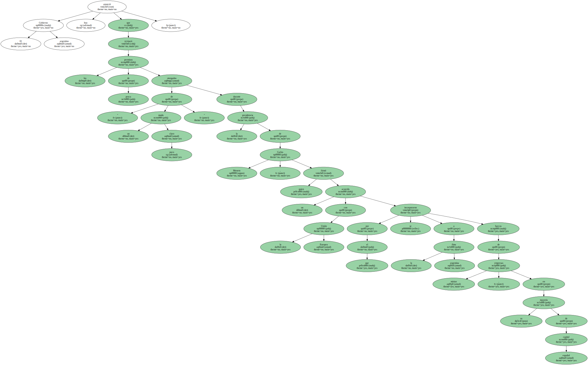La decisión fue tomada por el Ministerio de Economía tras llegar a la conclusión de que el incremento en el volumen de captura de la merluza , " a partir de un posible exceso de licencias para la pesca " , está poniendo en riesgo ese recurso natural , informó el secretario de Programación Macroeconómica y Regional , Miguel Bein.
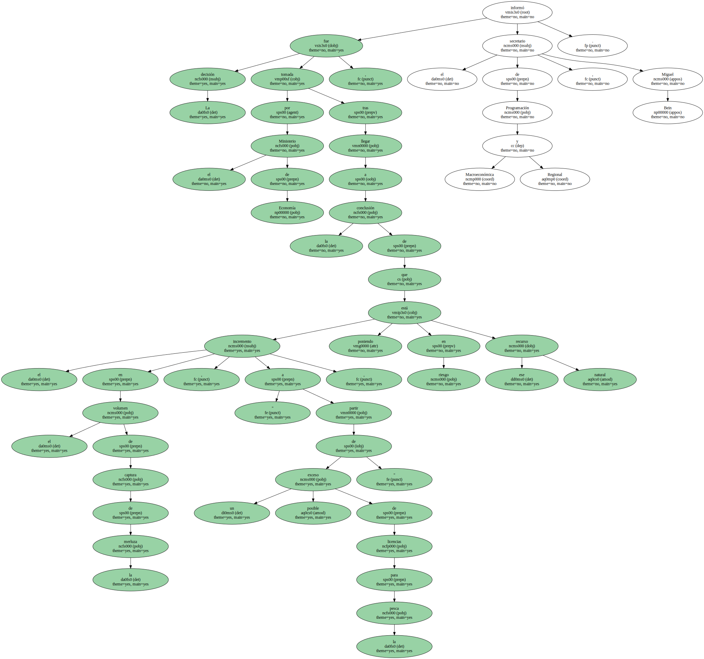El funcionario sostuvo que la disminución del número de capturas de merluza " tiene que ver con situaciones que se han dado en los últimos años en este país , en donde los permisos de pesca se dieron , como mínimo , de un modo poco claro " y aseguró que esta situación será investigada.
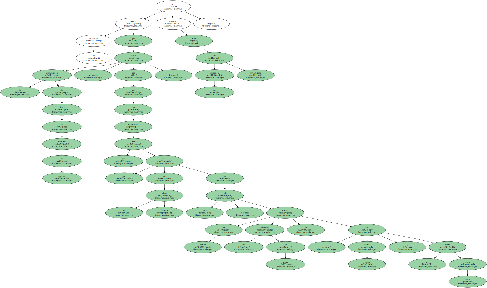" Hay una preocupación muy grande porque con la autorización de nuevos cupos de pesca , la sensación es que el recurso está casi colapsado después de años en los que se ha pescado más de medio millón de toneladas de merluza al año " , indicó Bein.
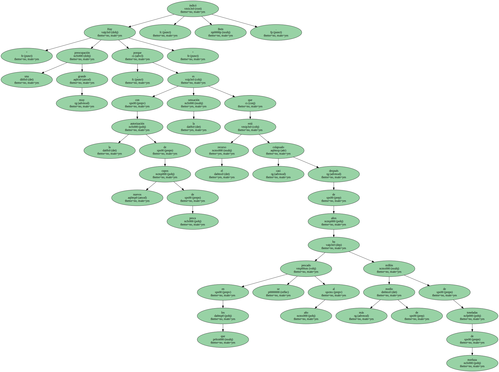Según el último informe del Instituto Nacional de Investigación y Desarrollo Pesquero ( INIDEP ) , entre 1998 y 1999 " se produjo una disminución significativa del 16 por ciento en la biomasa total del recurso merluza común , mientras que el número total de ejemplares mermó un 33 por ciento ".
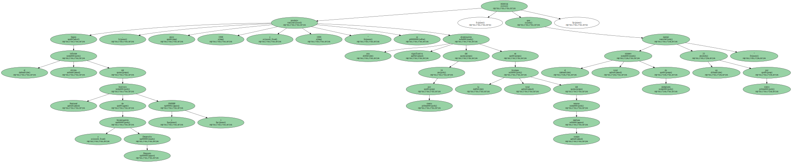" La significativa disminución de un 67 por ciento en el número de los ejemplares menores de 30 centímetros en 1999 respecto de 1998 anuncia un menor ingreso de ejemplares a la pesquería y , por consiguiente , una caída de los ejemplares adultos durante el 2000 " , alertó el estudio.

La escasez de la merluza comenzó a preocupar a las autoridades argentinas después de que en 1997 se registrara una captura de 584.048 toneladas de esa especie , que descendió a 458.433 en 1998.
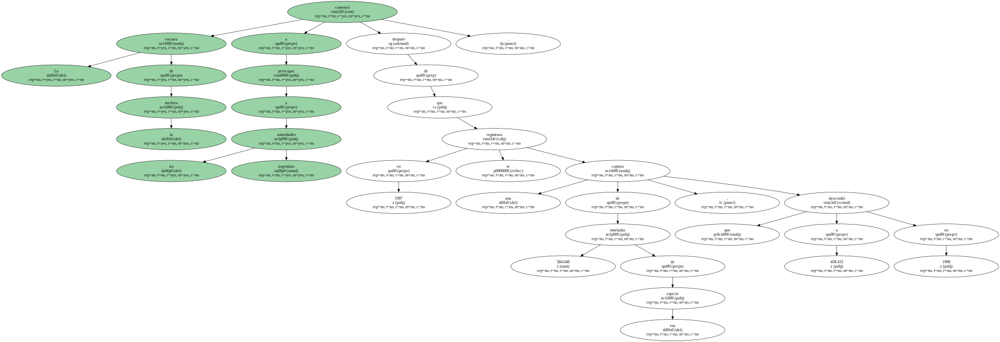Aunque el cupo de pesca de la merluza se limitó a 238.000 toneladas el año pasado , el Parlamento argentino debió sancionar en junio pasado una Ley de Emergencia Pesquera para frenar la sobreexplotación.
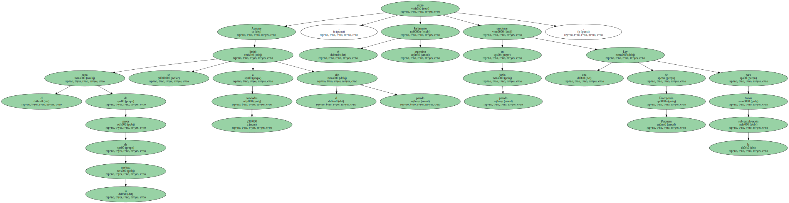En septiembre de 1999 , la organización ecologista Greenpeace denunció que el cupo de pesca para ese año ya había sido alcanzado y que las empresas pesqueras estaban depredando la merluza.
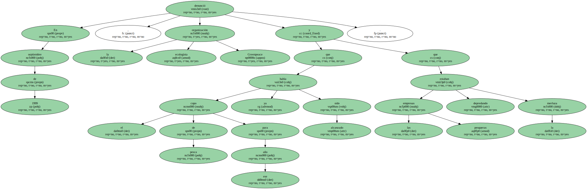Tras la prórroga de la Ley de Emergencia Pesquera que se decretó el pasado viernes , se estipuló una captura máxima permitida de 24.000 toneladas de merluza , el principal recurso pesquero de Argentina , para los próximos tres meses.
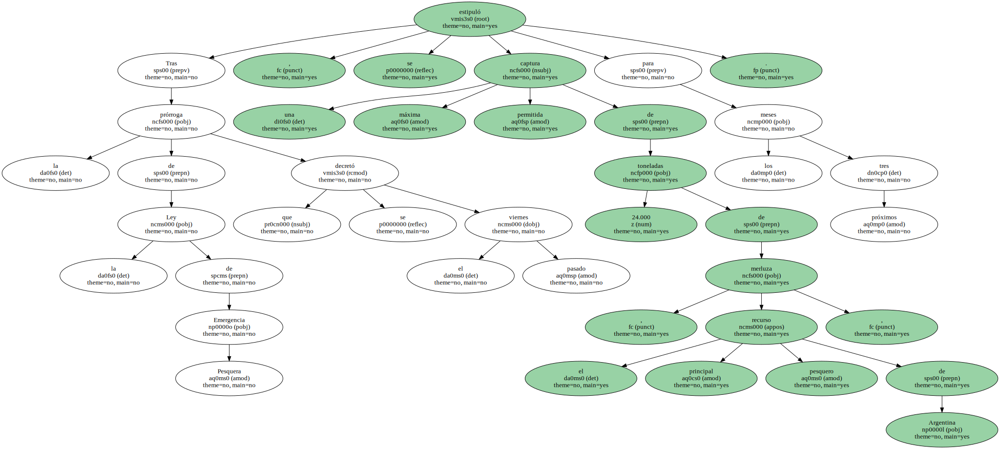Asimismo , el decreto prohíbe a los barcos congeladores explotar la especie en forma comercial y permite una captura incidental de 7.500 toneladas durante los próximos tres meses.
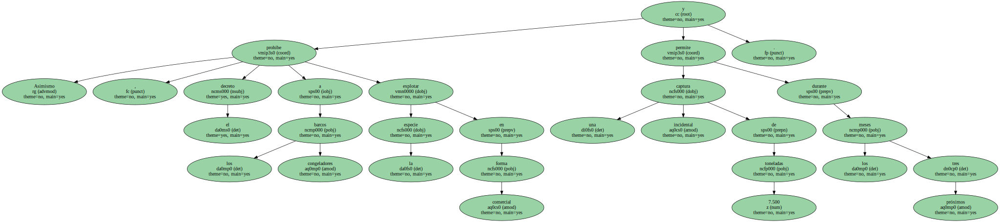La pesca da empleo directo en Argentina a unas 20.000 personas y empleo indirecto a otras 150.000 , muchas de las cuales trabajan en empresas pesqueras de capitales hispano-argentinos creadas a partir del acuerdo suscrito por Argentina y la Unión Europea ( UE ) en 1992 y que caducó en mayo de 1999.
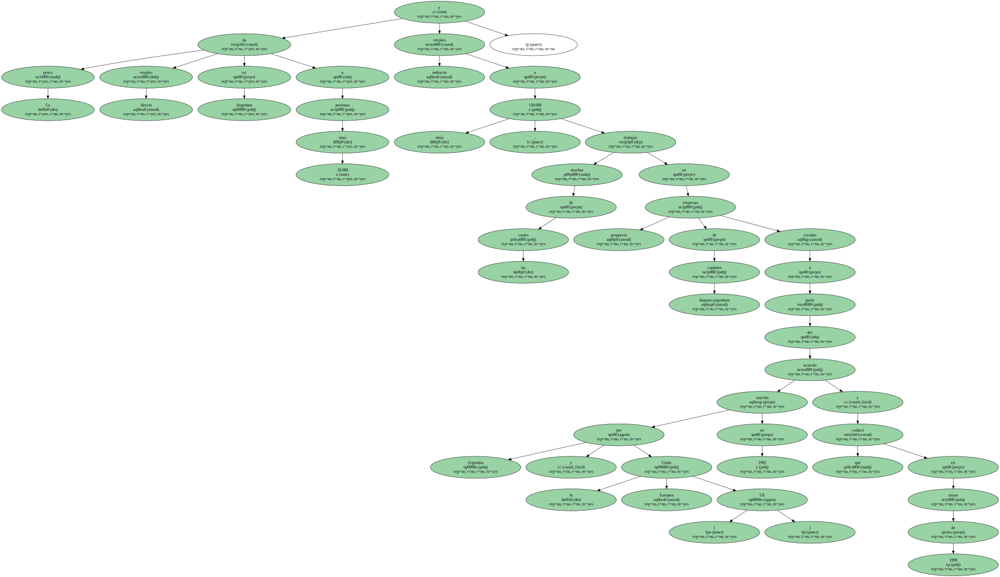Meses antes de su expiración , Argentina denunció el acuerdo , que teóricamente tenía como objetivo modernizar la flota pesquera.
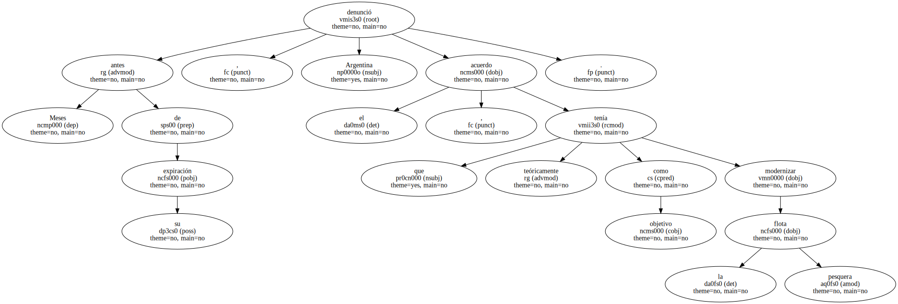En la práctica , el acuerdo supuso la ampliación de la flota pesquera , como demuestra el hecho de que en 1992 había 60 buques congeladores de todo tipo en el país y hoy hay 300 , dijo hoy a EFE Juan Villalonga , de Greenpeace.
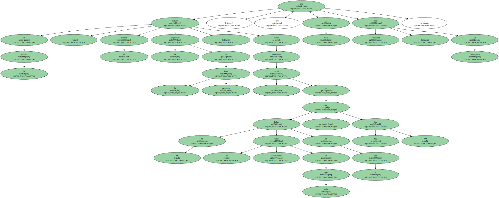Villalonga afirmó que hubo " poca rigurosidad " e " irregularidades " en la concesión de permisos y señaló que " lo perverso " del acuerdo es que los barcos de las empresas mixtas no tuvieron que dejar de faenar al no ser renovado pues ya están integrados en la flota argentina y tienen bandera de este país.
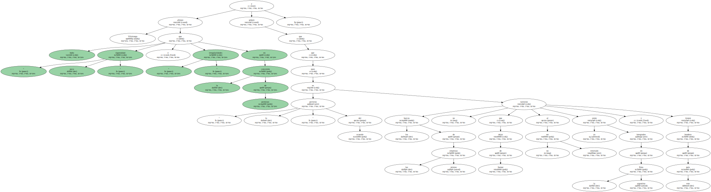